Workflow optimization chart
Use tabs in this order for the fastest pipe. Each step feeds the next; skip only what you already have on disk.
flowchart LR
subgraph setup["① Setup (once)"]
I[Install Grok.lua]
B[Bootstrap tab]
K[grok-secrets.env]
end
subgraph ingest["② Ingest media"]
S[Scan tab]
BR[Browser tab]
IM[Import tab]
end
subgraph create["③ Create"]
ID[IMDb tab]
CV[Canvas tab]
G[Generate Video]
end
subgraph edit["④ Edit & iterate"]
TL[Timeline tab]
TR[Terminal tab]
RG[Batch Regenerate]
end
subgraph publish["⑤ Publish optional"]
ST[Stream tab]
FD[Folder tab]
end
I --> B
B --> K
K --> S
S --> IM
BR --> CV
ID --> CV
CV --> G
G --> IM
IM --> TL
TL --> RG
RG --> CV
TR -. monitors .-> S
TR -. monitors .-> G
TL --> ST
ST --> FD
| Phase | Tab | When to use | Optimization tip |
|---|---|---|---|
| Setup | Bootstrap | First launch or new Resolve project | Creates 4K bins (03_clips/grok_generated) so imports land in the right place. |
| Setup | Bridge + Terminal | Before any generation from Resolve console | Keep bridge running; Terminal tab tails logs so you never guess if a job finished. |
| Ingest | Scan | After downloading from grok.com | macOS metadata finds Grok URLs in Downloads — faster than manual drag. |
| Ingest | Browser | Prompt lives in Safari, not on disk yet | Pull prompt → Canvas; Push prompt → grok.com/imagine handoff. |
| Create | IMDb | You need look / mood references | Search title or feel → Add to Prompt → switches to Canvas. Requires TMDB key (see below). |
| Create | Canvas | Every generation | Pick preset slug + LUT viewer; footer Generate Video writes to video/. |
| Edit | Import | After generate or scan | Select target bin in Media Pool first — imports go to active bin. |
| Edit | Timeline | Clips already on the timeline | Scan Timeline → edit meta per clip → Batch Regenerate without leaving Resolve. |
| Publish | Stream | Live X.com workflow | OBS overlay + X Studio RTMP; optional X_BEARER_TOKEN for announcements. |
UI tab snapshots
Open via Workspace → Scripts → Grok. Eleven tabs — Resolve cool blue-grey theme, orange accent bar.
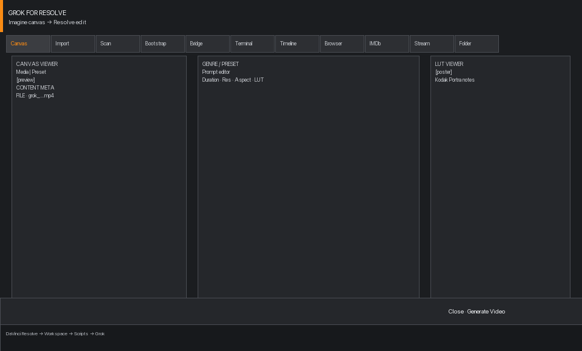
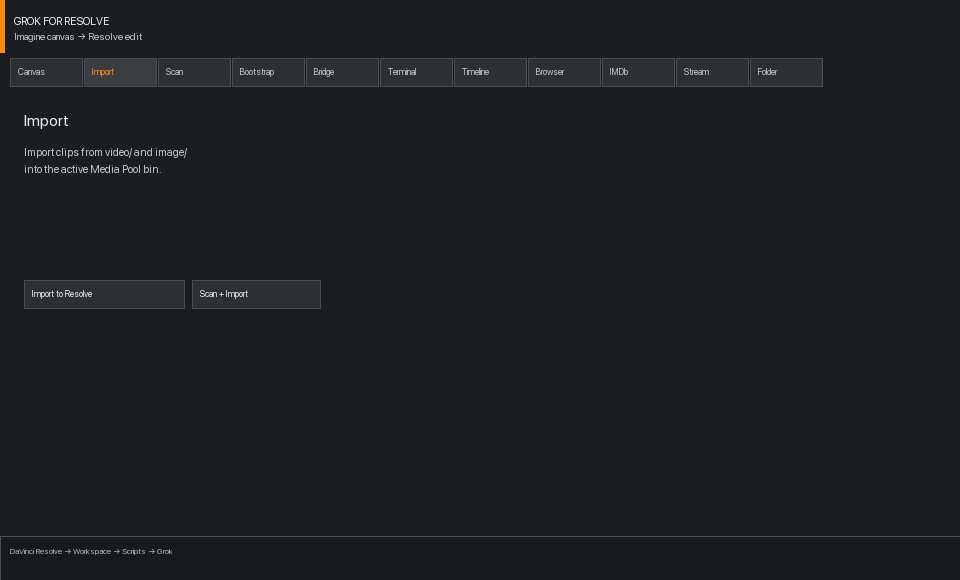
video/ and image/ into the active Media Pool bin.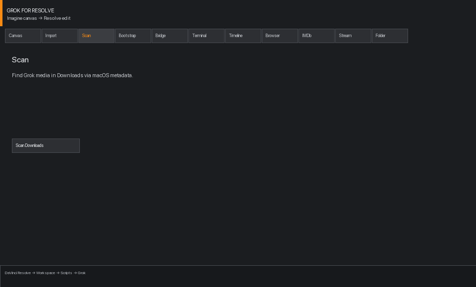
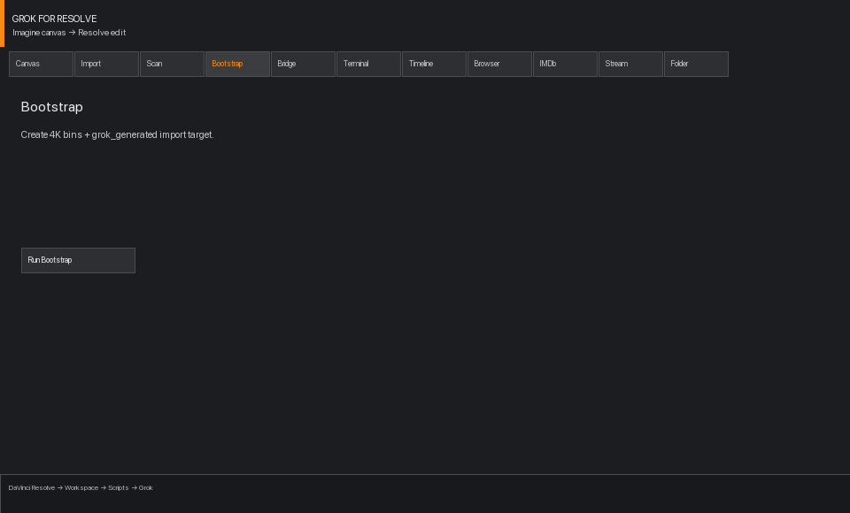
grok_generated import target.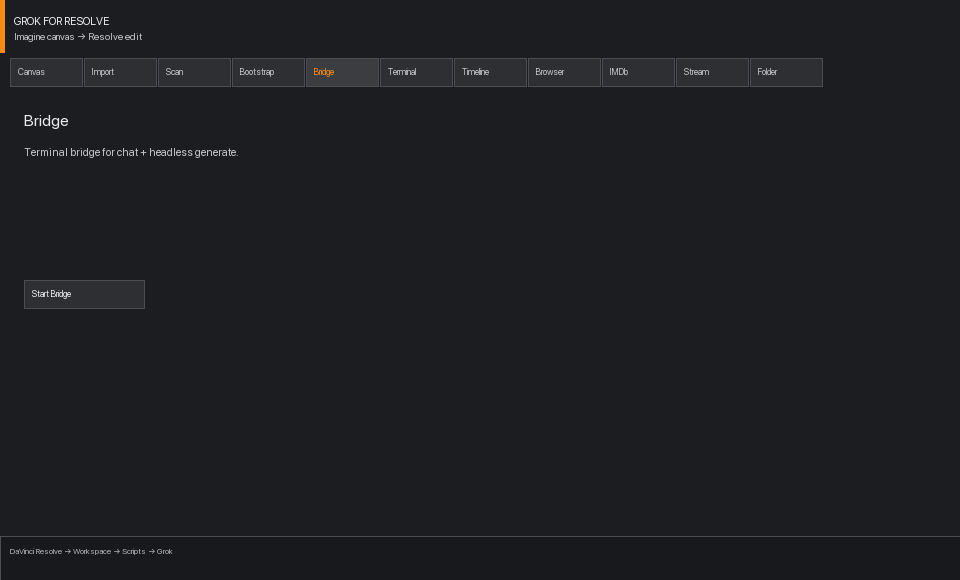
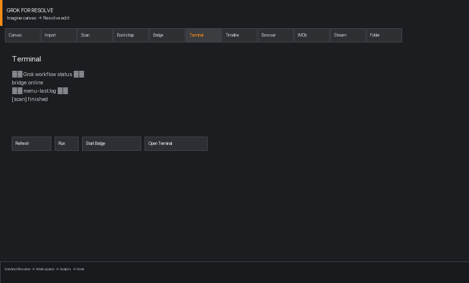
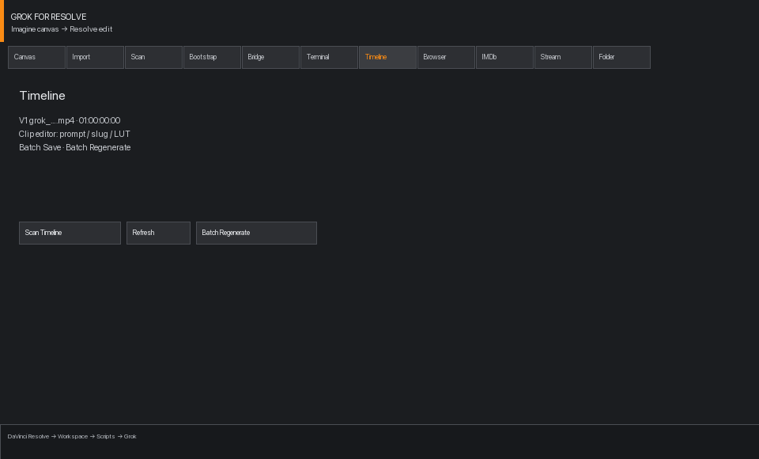
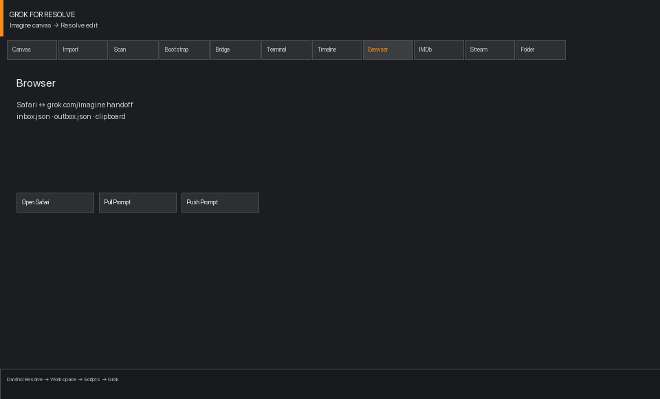
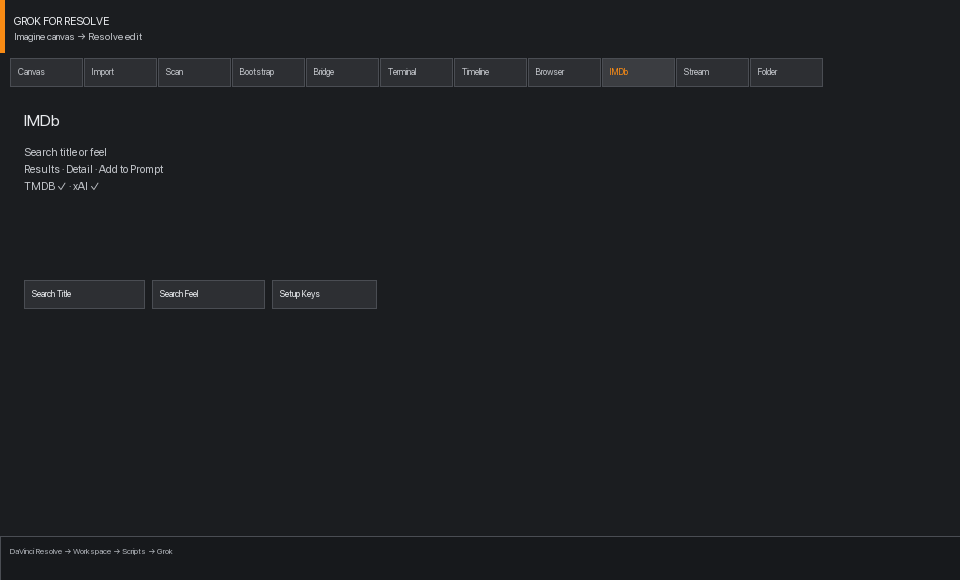
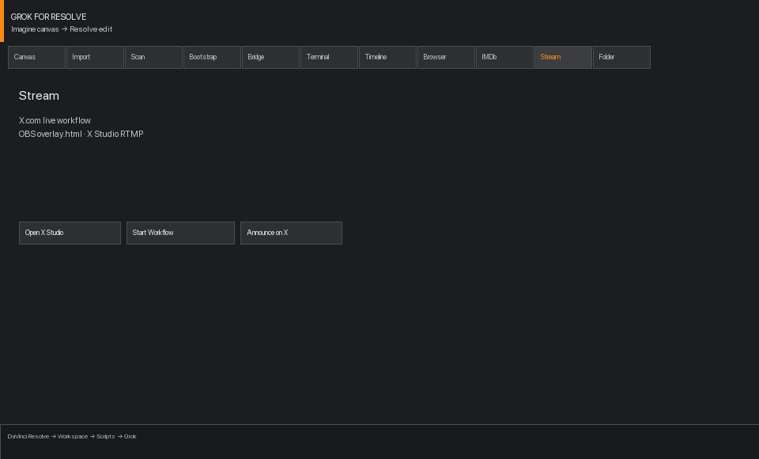
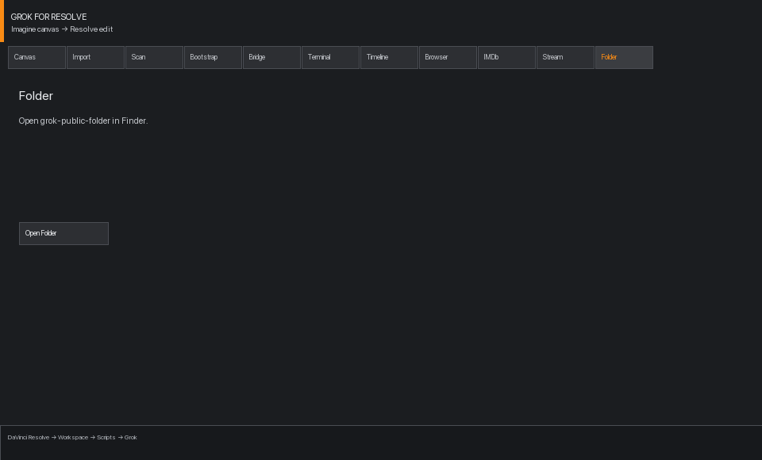
grok-public-folder in Finder.Install
1. Clone and install Resolve script
git clone https://github.com/fornevercollective/grok-public-folder.git
cd grok-public-folder
chmod +x install-resolve.sh bin/*
./install-resolve.sh
Installs Grok.lua into Fusion Utility scripts. Resolve Free (19.1+) uses this Lua menu —
not the legacy Python panel.
Workspace → Scripts → Grok2. Set folder path (if not using default)
Defaults to your clone path. Override with export GROK_PUBLIC_FOLDER=/path/to/grok-public-folder
before running bin/* scripts, or edit resolve/lua/grok_paths.lua.
3. Bootstrap + Media Storage
Inside the Grok UI: Bootstrap tab → Run Bootstrap. Optionally add the folder under
DaVinci Resolve → Preferences → Media Storage.
Workspace → Scripts.
IMDb search setup
IMDb tab search uses the TMDB API (free). If search returns nothing or shows
TMDB_API_KEY is not set, configure secrets:
cp project/grok-secrets.example.env project/grok-secrets.env
Get a free API key at
themoviedb.org/settings/api,
then edit project/grok-secrets.env:
TMDB_API_KEY=your-actual-key-hereOr click Setup Keys in the IMDb tab — it copies the example file and opens project/ in Finder.
Verify from terminal
./bin/imdb status # tmdb_configured: true
./bin/imdb search "Blade Runner"grok-secrets.env, TMDB requests were rejected.
The UI now surfaces the error and a Setup Keys shortcut instead of failing silently.
API keys
All keys live in project/grok-secrets.env (gitignored). Never commit this file.
| Key | Required for | Get it |
|---|---|---|
TMDB_API_KEY |
IMDb tab title search, detail, posters | themoviedb.org/settings/api |
XAI_API_KEY |
Canvas generate, feel search, trivia, bridge | console.x.ai |
X_BEARER_TOKEN |
Stream tab X announcements (optional) | X developer portal |
Folder layout
grok-public-folder/
├── video/ generated clips
├── image/ stills
├── imdb/ TMDB cache + posters
├── browser/ Safari handoff (inbox/outbox)
├── bridge/ Resolve ↔ terminal JSON
├── project/
│ ├── grok-secrets.env ← your keys (gitignored)
│ └── grok-secrets.example.env
├── bin/
│ ├── grok-menu Swift UI launcher
│ ├── imdb movie search CLI
│ ├── timeline timeline scan/batch
│ ├── bridge bridge daemon
│ └── scan Downloads scan
└── resolve/
├── lua/ console helpers
└── utility/Grok.luaTroubleshooting
| Problem | Fix |
|---|---|
| IMDb search returns no results / error | Create project/grok-secrets.env with TMDB_API_KEY. Run ./bin/imdb status. |
| IMDb tab shows TMDB ✗ | Click Setup Keys or copy grok-secrets.example.env → grok-secrets.env. |
| Generate fails | Set XAI_API_KEY in grok-secrets.env. Start bridge from Bridge tab. |
| Imported 0 files | video/ empty — Scan Downloads or Generate first. Select target bin before Import. |
| Scripts missing in Resolve | Re-run ./install-resolve.sh and restart Resolve. |
| Timeline scan empty | Open a timeline with Grok clips, then Timeline tab → Scan Timeline. |